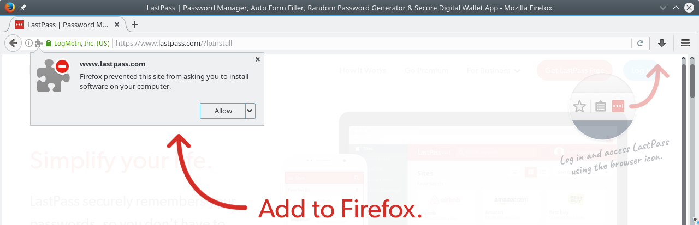
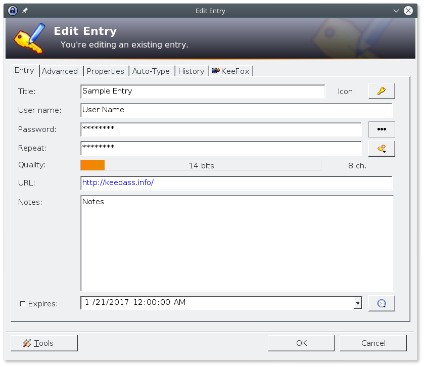

Online Sicherheit für Laien: Teil 2 - Passwörter leicht gemacht
Im letzten Teil unserer Postreihe “Sicherheit für Laien”, ging es um die gängigen Sicherheitspraktiken, wie sie von Laien und Experten gleichermaßen angewandt werden. In diesem und dem nächsten Teil möchte ich etwas genauer auf zwei Punkte des letzten Artikels eingehen und diese anhand von konkreten Beispielen etwas besser darstellen. Ganz konkret handelt es sich dabei um die Themen Passwortverwaltung und welche Software sich dafür anbietet, sowie die Installation von Updates, mit besonderem Fokus auf dem Open Source Softwaremarkt Chocolatey welche im nächsten Teil behandelt wird.
Passwortverwaltung On- und Offline
Als Erstes werfen wir einen genaueren Blick auf das Thema, dass meiner Meinung nach die höchste Priorität bei all denen haben sollte die ihre Passwörter noch im Kopf oder auf Papier festhalten. Es geht um die Verwaltung der unzähligen Passwörter, die man im Leben so ansammelt oder genauer gesagt, ansammeln sollte, denn leider verwenden viele einfach das gleiche oder eine Handvoll ähnlicher Passwörter für alle Accounts. Doch bevor ich mögliche Softwarelösungen vorstelle, möchte ich ein wenig darauf eingehen, warum ein Passwortmanager für alle Netzbewohner so selbstverständlich sein sollte wie ein Haustürschlüssel.
Wie viele Passwörter sind genug?
Viele Menschen haben ein Problem damit sich unterschiedliche Passwörter zu merken. Das wird dadurch erschwert, dass die Sicherheit der Passwörter von vielen Firmen im Netz negativ beeinflusst wird indem sie Ihren Kunden oder Nutzern eine Liste an Anforderungen für Passwörter aufdrücken. Probleme wie dieses sind sicherlich jedem bekannt, der sich bereits auf der ein oder anderen Webseite einen Account erstellt hat.

Bild: Registrierungsformular auf epetitionen.bundestag.de
Da diese Anforderungen stark unterschiedlich sind und in manchen Fällen die Kunden sogar dazu zwingen schwache Passwörter zu wählen, gibt es keinen Algorithmus mit dem sich ein universelles, starkes Passwort für alle Seiten im Netz erstellen lässt. Mal ist ein Sonderzeichen erforderlich, mal darf keins dabei sein, der nächste Anbieter lässt nur 8 Zeichen zu und der wiederum Nächste verlangt mindestens 12. Das hat in der Regel zu Folge, dass jeder eine Handvoll unterschiedlicher Passwörter oder Variationen des eigentlichen Hauptpassworts mit sich herumträgt.
Sicher ist das allerdings nicht. Um vor passwortbasierten Angriffen geschützt zu sein, ob diese nun gezielt oder Teil eines automatisierten Massenangriffs sind, bedarf es einzigartiger Passwörter für jedes Konto. Zusätzlich dürfen diese Passwörter nicht voneinander ableitbar sein. Wer Passwörter wie amazon1986',ebay2017oderwindows1860` verwendet, lässt natürlich vermuten wie die anderen Passwörter zusammengesetzt sein könnten. Wer die Löwen auf Facebook liked, sollte diese nicht in seinem Passwort haben. Das gilt für alles was öffentlich bekannt ist, oder bekannt gegeben wurde und spielt im Zeitalter von Social Media eine größere Rolle denn je.
Wenn es um Hackerangriffe geht, gehen die meisten davon aus das sie selbst kein wertvolles Ziel sind.
"Was will bitte jemand mit meinem Account?"Doch von der Idee, dass eine Person in schwarzem Hoodie hinter einem Rechner sitzt und sich den Kopf zerbricht wie das Passwort von Max Mustermann aus der Musterstraße lautet, dürfen sich die meisten schnell verabschieden. Denn auch wenn diese Art von gezielten Angriffen stattfindet, so sind sie eher ein Problem von Personen der Öffentlichkeit oder Firmen, und dort wiederum vor allem von Mitarbeitern in interessanten Positionen, wie zum Beispiel Geschäftsführern, Management und auch Technikern. Nichtsdestotrotz finden täglich auch Angriffe auf Herrn Mustermann und seinesgleichen statt, nur sind diese in der Regel hochgradig automatisiert. Passwörter werden in den wenigsten Fällen nach dem klassischen Brute-Force Verfahren, also dem Ausprobieren sämtlicher Möglichkeiten durchgeführt, sondern basieren auf zuvor gesammelter Daten, die meist aus öffentlichen Quellen stammen. Diese werden in Fachkreisen auch als Open Source Intelligence, kurz OSINT, bezeichnet.
Klassischer Brute-Force Ansatz
aaaaaa, aaaaab, aaaaac, aaaaad, [...], zsgadc1, zsgadc2, [...], LsKD34B, LsKD34C, LsKD34DBrute-Force basierend auf OSINT
# VornameGeburtsdatum, HaustierJahreszahl, Fussballverein, Lieblingssänger, etc.
Michael1967, Schnuffi2017, FCBayern, Rick Astley, ...Es ist schnell ersichtlich, dass die auf OSINT basierende Methode eine höhere Erfolgschance bietet, und daher auch weniger Zeitaufwand bedeutet. Noch leichter wird es, wenn der Angreifer bereits ein Passworts des Opfers kennt. Gerade in den letzten Monaten stieg die Anzahl an Datenlecks von Kunden- und Nutzerdaten diverser Plattformen und Webseiten im Netz gewaltig an. Diese gestohlenen und veröffentlichten Daten können entweder direkt bei anderen Portalen ausprobiert werden, oder dienen zumindest als gute Hilfestellung bei passwortbasierten Angriffen.
Wer sich einen groben Überblick verschaffe möchte, wie viele Datensätze von welchen Seiten gestohlen und im Internet veröffentlicht wurden kann einen Blick auf HaveIBeenPwned werfen. Das Portal gibt anhand der E-Mail-Adresse auch darüber Auskunft, ob Teile Ihrer Accountdaten im Netz veröffentlicht wurden. Falls ja, gilt es umgehend das Passwort zu ändern und zwar auf allen betroffenen Seiten!
Also, wie viele Passwörter sind genug?
Die Antwort ist, so viele wie man Accounts besitzt. Es mag am Anfang überwältigend klingen, aber für jedes Konto das Ihr erstellt, solltet Ihr ein eigenes, einzigartiges und starkes Passwort haben welches nicht von den anderen ableitbar, also zufälliges generiert, und sicher gespeichert ist.
Lasst uns doch mal sehen wie viele das ungefähr wären:
- Login für den Rechner (Windows / Linux / Mac Login)
- Login für den Passwort-Manager (Masterpasswort, mehr dazu weiter unten)
- Passwort für die Festplattenverschlüsselung (kurz
FDE, dazu mehr in einem späteren Teil) - PIN/Passwort für die Bildschirmsperre des Smartphones (iPhone / Android / etc.)
- PIN für Girokonto und Kreditkarten
- Passwörter für sämtliche Online-Accounts
- Evtl. PIN für Haustüren oder Tresore
- Vermutlich noch einige mehr...
Ein kurzer Blick auf die Liste oben zeigt, wie viele Zugangsdaten wir uns täglich merken müssen. Kein Wunder, dass die meisten versuchen die Anzahl an Passwörtern die es zu merken gilt zu reduzieren, anstatt zu vermehren. Deshalb ist die Verwendung eines Passwortmanagers sinnvoll und sehr zu empfehlen. Ein Passwortmanager ist ein Programm, welches ähnlich einem Tresor, die wichtigen Daten sicher ablegt und nur dem Besitzer bei Bedarf Zugriff erteilt. Um An die Daten des Passwortmanagers zu gelangen, muss der Besitzer folgende Anforderungen erfüllen.
- Zugang zu einem Rechner, vermutlich der Eigene (erfordert Login- und ggf. FDE-Passwörter)
- Zugriff auf die Daten im Passwortmanager (erfordert Masterpasswort für den "Tresor")
- Ggf. Zugang zum Smartphone, falls 2-Faktor-Authentifizierung aktiv ist (
2FA, mehr dazu in einem späteren Teil)
Damit haben wir die Anzahl an zu merkenden Passwörtern auf 3 reduziert. Mit diesen drei Passwörtern können wir alle anderen Passwörter bei Bedarf abrufen. Je nachdem welche Lösung man für sich wählt, gibt es jedoch noch weitere Einschränkungen. Nutzt man einen Passwortmanager der keine App für das Smartphone anbietet, sollte man sich die PIN für das Girokonto und ähnliche Zugänge vielleicht besser merken, denn nicht jeder hat immer sein Notebook dabei, um mal eben auf die PINs zuzugreifen.
Kann ich das nicht einfach aufschreiben?
Viele Leute tendieren dazu, Passwörter einfach auf Papier festzuhalten statt einen Passwortmanager zu verwenden. Das kann funktionieren, kann aber auch gleichermaßen in die Hose gehen.
Vorteile:
- Jeder weiß wie Papier und Stift zu benutzen sind, daher ist diese Lösung unkompliziert
- Es wird kein zusätzliches Passwort benötigt dass man sich merken muss
- Wer sich nur vom Rechner Zuhause auf Webseiten anmeldet, hat die Lösung auch immer parat
- Wer das Papier mit den Passwörtern versteckt, vermindert das Risiko von Diebstahl (ein wenig)
Nachteile:
- Backups sind umständlich anzulegen (abschreiben/scannen/kopieren)
- Saubere Handschrift ist erforderlich
- Papier wird bei Änderungen unübersichtlich (bzw. Papier muss neu geschrieben werden)
- Änderungen erfordern ein erneutes Erstellen des Backups
- Backups sind in der Regel am gleichen Ort aufbewahrt wie das Original (Zuhause)
- Backups und Original sind Anfällig für Schäden (Feuer, Wasser) wenn nicht entsprechend geschützt
- Papier und Backups sind nicht verschlüsselt, daher für jeden lesbar der sie in die Hände bekommt
- Wer versucht für jeden Account ein eigenes Passwort zu verwenden stößt hier bald an die Grenzen
- Sichere Passwörter auszudenken ist für Menschen ein komplizierter und fehleranfälliger Prozess
- Lösung bietet sich nicht für Reisen oder zum Arbeiten Unterwegs an (Risiko von Verlust / Diebstahl)
- Das Teilen von Zugängen mit anderen Leuten (z.B. Netflix) wird erschwert
Ja, man kann die Passwörter einfach auf Papier schreiben und im Regal oder, falls möglich, feuerfesten Tresor aufbewahren. Sollte diesem jedoch etwas zustoßen, dann kann man nur hoffen bei der letzten Änderung auch eine Sicherheitskopie angelegt, oder diese aktualisiert zu haben, denn sonst steht man ohne Logins da.
Wer sich jetzt denkt, die ganzen Probleme seien einfach mit einem Word-Dokument gelöst irrt allerdings gewaltig. Eine digitale Stift-und-Papier-Lösung bringt eine Menge an Sicherheitsrisiken ohne die Vorteile eines Passwortmanagers und ist die mit Abstand ungünstigte Lösung.Die bessere Lösung wäre in jedem Fall ein Passwortmanager, und davon möchte ich heute drei Varianten vorstellen.
- LastPass: Ein kommerzieller, aber kostenlos nutzbarer Onlinedienst mit Unterstützung für viele Plattformen
- Bitwarden: Ein kostenloser Online Dienst auf Open Source Basis, mit Unterstützung für viele Plattformen
- KeePass: Ein kostenloses Open Source Programm ohne Onlinefunktion, oft wegen seiner hohen Sicherheit gelobt.
LastPass: Ein Online-Passwortmanager mit guter Integration
LastPass ist ein hervorragender Passwortmanager den ich persönlich bereits seit Jahren verwende und immer gerne empfohlen habe. Er ist in einer kostenlosen Variante mit etwas eingeschränkter Funktionalität verfügbar, kostet in der Pro-Version jedoch nur 12$ im Jahr, was in keinem Geldbeutel allzu schwer auffallen sollte.
Vorteile:
- Sehr einfache Benutzung
- Verfügbar als Browserplugin für Chrome, Firefox, Internet Explorer und Safari
- Verfügbar als App für Android, iPhone, Windows, Linux, Mac OSX
- Verfügbar als Webanwendung für alle die keine Software installieren wollen oder können
- Einfach unterwegs einsetzbar (Mobile-Apps und Smartphone kompatible Webanwendung)
- Sichere Verschlüsselung der Daten auf dem lokalen Rechner, bevor Daten hochgeladen werden
- Unterstützt 2-Faktor-Authentifizierung (
2FA) für besseren Loginschutz - Verfügt über einen Sicherheitscheck der dem Kunden sagt wie stark die Passwörter sind
- Informiert Kunden wenn eine gespeicherte Webseite gehackt wurde (soweit bekannt)
- Ermöglicht das sichere Teilen von Zugängen mit anderen Nutzern (z.B. Netflix Familienaccount)
- LastPass ging mit Sicherheitsprobleme bisher gut um, siehe auch unter Nachteile
Nachteile:
- Programme und Server sind nicht Open Source und daher in ihrer Funktionsweise recht undurchsichtig
- Daten werden (verschlüsselt) in der Cloud gespeichert
- LastPass wurde von LogMeIn gekauft, welche Ihren letzten kostenlosen Dienst kurzfristig einstellten
- LastPass führt Sicherheitsprüfungen (Audits) durch, veröffentlicht aber die Resultate nicht
- LastPass verweist stattdessen auf diesen Blogpost eines unabhängigen Sicherheitsexperten
- Quelle: LastPass - https://lastpass.com/support.php?cmd=showfaq&id=1626
- Blogpost von 2010: http://blog.tinisles.com/2010/01/should-you-trust-lastpass-com/
- LastPass verschlüsselt nicht alle Informationen, wie es von der Firma behauptet wird.
- Die URL der gespeicherten Webseite wird nicht mit dem Master-Passwort verschlüsselt
- Die URLs werden von LastPass verwendet, um die Logos der Webseiten anzuzeigen
- Vermutlich werden die URLs auch verwendet, um über gehackte Seiten zu informieren
- Quelle: https://hackernoon.com/psa-lastpass-does-not-encrypt-everything-in-your-vault-8722d69b2032#.faz8o11qs
- LastPass wurde 2015 gehackt (Vorteile
+und Nachteile `-')- – dabei wurden Nutzerdaten entwendet
- E-Mail-Adresse des LastPass Accounts
- Passwort Tipp (falls vom Benutzer zur Erinnerung vergeben)
- Passwort in Hash-Form (nicht einfach auslesbar, kann mit hohem Aufwand ggf. geknackt werden)
- + Die verschlüsselten Passwortdaten der Nutzer wurden laut LastPass nicht gestohlen
- + Als Vorsichtsmaßnahme wurde Nutzer dazu aufgefordert ihr Masterpasswort zu ändern
- + Benutzer wurden per E-Mail über den Vorfall informiert
- Quelle: https://blog.lastpass.com/2015/06/lastpass-security-notice.html/
- Quelle: http://lifehacker.com/lastpass-hacked-time-to-change-your-master-password-1711463571
- – dabei wurden Nutzerdaten entwendet
Grundsätzlich ist kein Dienst jemals zu hundert Prozent sicher oder unhackbar. LastPass ist 2015 definitiv ein gehöriger Fehler unterlaufen, dennoch bin ich vom Ausgang im Allgemeinen positiv überzeugt, denn von anderen Firmen und Onlineportalen habe ich bereits weit schlimmeren Umgang mit solchen Situationen erlebt.
LastPass in der Praxis
Soviel zu den Vor- und Nachteilen von LastPass. Doch jetzt wollen wir uns das Programm in der Praxis etwas näher ansehen. Auf der Webseite des Anbieters kann man sich für einen kostenlosen Account registrieren.
Auch wenn es nicht zwingend notwendig ist, so ist es doch empfehlenswert dem Vorschlag von LastPass zu folgen und das Browser-Addon zu installieren. Die Aufforderung dazu erfolgt automatisch, wie in meinem Beispiel in Firefox zu sehen ist.

Sobald das Plugin installiert ist, wird man automatisch zur Accounterstellung weitergeleitet. An dieser Stelle ist es enorm wichtig, ein gutes Passwort zu wählen, da dieses die zukünftige Sicherheit der restlichen Passwörter diktiert. Wer ein schwaches Masterpasswort wählt, riskiert gleichzeitig auch alle gespeicherten Accounts.
Hier sind zwei bekannte Möglichkeiten um ein sicheres Passwort zu wählen das man sich auch noch merken kann.
Satz basierte Passwörter
Der folgende Satz wird in ein Passwort umgewandelt, indem die ersten Buchstaben aneinandergereiht werden. Eine kleine Sicherheitssteigerung kann durch das austauschen von Buchstaben oder Wörtern durch Zeichen und Zahlen erreicht werden, allerdings ist dies bei weitem nicht so sicher wie ein Kennwort das zufällig generiert wurde.
Satz: Mein Hund hat ein kurzes Bein und braunes Fell, Ich gehe gerne mit ihm spazieren.
Satz: M H h e|1 k B u|& b F , I g g m i s .
Passwort 1: MHhekBubF,Iggmis.
Passwort 2: MHh1kB&bF,Iggmis.Alltagsgegenstände und Eselsbrücken
Eine weitere Methode wurde in Ausgabe #936 des recht bekannten Webcomics XKCD vorgezeigt. Sie basiert auf der Kombination von gängigen Wörtern und entsprechenden Eselsbrücken um das Passwort nicht zu vergessen.

Nachdem man sich ein starkes Passwort ausgedacht hat, kann man mit der Registrierung fortfahren. Wichtig ist, dass der Reminder (Passwort Erinnerung) nur dem Besitzer des Passworts helfen sollte. Der im Bild unten dargestellte Hinweis gibt zu viele Informationen Preis und spätestens jetzt sollte jedem Leser klar sein wie das von mir gewählte Passwort lautet. Wie oben bereits angemerkt, wurde LastPass 2015 gehackt, und unter den entwendeten Daten befanden sich unter anderem genau diese Hinweise.
Direkt nach der Registrierung ist unser Tresor, oder Vault wie es bei LastPass heißt, noch ziemlich leer. Das lässt sich aber leicht ändern. Das LastPass Browser-Addon prüft bei jedem Login auf einer Webseite, ob dieser Login bereits im Vault gespeichert ist. Ist das noch nicht der Fall, hat der Benutzer die Wahl diese zu speichern oder LastPass mitzuteilen, Logins für die aktuelle Webseite niemals zu speichern. Die letzte Option ist vor allem dann von Nutzen, wenn bestimmte Logins nicht in LastPass gesichert werden sollen. Beispielsweise speichere ich die Zugangsdaten zu meiner E-Mailadresse bewusst nicht in LastPass, da diese es mir ermöglicht die Passwörter meiner einzelnen Onlineaccounts zurückzusetzen. Würde jemand Zugang zu all meinen Accounts und meiner E-Mailadresse bekommen, hätte ich keinerlei Möglichkeit mehr meine Zugänge zurückzubekommen. Das ist jedoch eine zusätzliche Sicherheitsmaßnahme die ich mir persönlich auferlegt habe, und deren Notwendigkeit jeder für sich selbst entscheiden sollte.

Die Addons sind im Übrigen auch in Deutsch verfügbar und werden hier aufgrund der Spracheinstellungen meines Betriebssystems auf Englisch angezeigt.
Ist ein Account bereits in LastPass gespeichert, wird er automatisch beim Besuch der Webseite als Login angeboten. Dadurch macht LastPass nicht nur das Merken, beziehungsweise Verwalten von Passwörtern, sondern auch den Loginprozess auf vielen Webseiten leichter.
Mit LastPass starke Passwörter generieren
LastPass bringt unter anderem auch einen Passwortgenerator mit, mit dem sich zufällige Passwörter generieren lassen. Im Web-Vault ist dieser unter More Options => Advanced => Generate secure password verfügbar, schneller gehts über das Tastenkürzel Alt+g, für alle die das Browser-Addon installiert haben.

Soviel zu LastPass, die anderen Funktionen wie das Teilen von Passwörtern mit Freunden und Familie, Mobileapps und Desktop-Programme sowie die Sicherheitsprüfung dürft Ihr gern selbst ausprobieren.
Bitwarden als Open Source Alternative zu LastPass
LastPass war bisher eine der wenigen Lösungen die eine umfassende Integration in Desktop- und Mobilgeräte sowie Browser bietet. Doch leider fällt LastPass unter sogenannte proprietäre Software, also eine deren Quellcode nicht einsehbar ist. Bitwarden hingegen stellt eine solide Alternative zu LastPass mit ähnlicher Integration da und steht zudem ganz und gar unter der Open Source Lizenz GPLv3. Und mit ganz meine ich auch ganz, denn nicht nur die Browserplugins und Mobileapps sind öffentlich einsehbar, auch die Webanwendung und die Kernkomponente des Servers, der Bitwarden Core, sind auf Github zu finden.
Ansonsten basiert Bitwarden auf einem ähnlichen Konzept wie auch sein kommerzieller Gegenspieler LastPass. Daten werden vom Client verschlüsselt und dann zu den Bitwarden Servern hochgeladen. Wem das immer noch zu riskant ist und das nötige technische Wissen mitbringt, kann sich aber auch die Mühe machen und einen eigenen Bitwarden Server betreiben. Allerdings müssen dann auch alle Browserplugins und Mobileapps entsprechend angepasst werden.
Vorteile:
- Steht komplett unter der Open Source Lizenz GPLv3
- Motiviertes Entwicklerteam und aktive Arbeit am Projekt
- Einfach zu verwenden, schöne Benutzeroberfläche
- Bessere Integration als so manche Konkurrenten (Mobileapps, Browserplugins für Chrome und Opera)
- Einfach unterwegs einsetzbar (Mobile-Apps und Smartphonekompatible Webanwendung)
- Sichere Verschlüsselung der Daten auf dem lokalen Rechner, bevor Daten hochgeladen werden
- Unterstützt 2-Faktor-Authentifizierung (
2FA) für besseren Loginschutz - Möglichkeit einen eigenen Server zu betreiben (vor allem interessant für Firmen)
- Nutzung ist momentan komplett kostenlos, zukünftig sind kommerzielle Firmenaccounts geplant
Nachteile:
- Einige Integrationsmöglichkeiten fehlen noch (Desktop-Apps, Plugins für Firefox, Safari und IE)
- Noch nicht so erprobt wie andere Lösungen (seit 2015 am Markt)
- Entwickler verfügen (noch) nicht über die gleichen Ressourcen wie kommerzielle Firmen
- Bisher wurde kein Sicherheitsaudit durchgeführt (ist geplant, Datum und Finanzierung allerdings noch unbekannt)
- Daten werden (verschlüsselt) in der Cloud gespeichert
- Bisher keine Berichte über Sicherheitsvorfälle bei Bitwarden
- Kann bedeuten das Bitwarden alles gut abgesichert hat
- Kann bedeuten das Bitwarden Angriffe nicht mitbekommt
- Kann bedeuten das Bitwarden Angriffe oder Hacks vertuscht (IMHO, unwarscheinlich)
Bitwarden ist ein sehr interessantes Projekt und ermöglicht seinen Nutzern eine einfache und effektive Handhabung von Passwörtern. In recht kurzer Zeit haben die Entwickler eine solide Lösung aufgestellt und arbeiten stetig an den noch fehlenden Features. Ich persönlich warte noch ab, bis ein Sicherheitsaudit durchgeführt und veröffentlicht wurde, doch es besteht eine gute Chance das meine Zeit als treuer Kunde von LastPass sich dem Ende nähert. Auch wenn noch einigeerstmal Browserplugins fehlen, möchte ich daher dennoch bereits einen Einblick in die Nutzung von Bitwarden geben.
Bitwarden in der Praxis
Bitwarden hat zwar noch nicht für alle Browser ein Plugin parat, das soll aber nicht davon abhalten es zu nutzen. Die Webanwendung ist übersichtlich strukturiert und hat sich während meinen Tests angenehm reaktiv verhalten.
Natürlich ist auch Bitwarden am Anfang erstmal leer, daher müssen zuerst Logins hinzugefügt werden bevor die Software ihren Dienst verrichten kann. Wenn der Vault ausgewählt ist, kann im Menübereich links ein neuer Login oder Ordner hinzugefügt werden.
Da noch keine Ordner erstellt wurden, steht im entsprechenden Dropdown-Feld Folder vorerst nichts zu Auswahl. Mit der Menüoption New Folder kann das jedoch schnell korrigiert werden. Zur besseren Übersicht habe Ich deshalb den Ordner Online Shops für Seiten wie Ebay und Amazon erstellt.

Damit wäre auch schon die Kernfunkion der Webanwendung dargestellt. Um sich in Webseiten anzumelden, müssen die Daten aus dem Vault händisch kopiert und dann im Loginformular der jeweiligen Seite eingefügt werden. Komfortabler geht das natürlich mit den Browserplugins, die aber momentan nur in Chrome und Opera bereitstehen.
Nach der Installation wird man zu einem Video auf der Webseite von Bitwarden weitergeleitet, welches die grundlegenden Funktionen des Addons erklärt.
Ähnlich wie bei LastPass, fordert auch Bitwarden bem Login auf einer neuen Webseite den Benutzer auf, diese im Vault zu Speichern.
Wer auf Yes, save now klickt wird feststellen das Bitwarden, anders als LastPass, das zu speichernde Objekt nicht automatisch im Editor öffnet sondern sofort im Vault ablegt. Das ist aber kein großes Problem, da der neu gespeicherte Login sofort im Plugin zur Verfügung steht und von dort ohne viel Aufwand angepasst werden kann. In diesem Beispiel setze ich noch schnell den Ordner auf Online Shops, damit ich ihn zukünftig leichter finde.

Mit Bitwarden starke Passwörter generieren
Mit dem Bitwarden lassen sich starke Passwörter leicht erstellen. Zwar geht dies etwas eingeschränkter auch im Web-Vault, bequemer ist es jedoch über das Browser-Plugin. Darin lassen sich unter Tools => Passwort Generator Passwörter nach den gewünschten Anforderungen schnell und einfach erstellen.
Soviel zur Open Source Alternative zu LastPass. Zu guter Letzt werfen wir noch auf den Passwortmanager KeePass einen Blick, der nicht nur bereits seit Jahrzehnten genutzt wird, sondern auch unter Sicherheitsexperten ein hohes Ansehen genießt.
KeePass: Das Original unter den Passwortmanagern
Das wohl größte Unterscheidungsmerkmal ist, dass KeePass ohne Server, und somit ohne integrierten Sync funktioniert. Der Vorteil davon liegt klar auf der Hand, man gibt seine Daten nicht in fremde Hände. Umgekehrt führt das aber auch zu Nachteilen, wie Ihr in der Gegenüberstellung unten sehen könnt.
Vorteile:
- Vollständig unter der Open Source Lizenz GPLv2 verfügbar
- Nutzer hat volle Kontrolle über seine Daten, da diese nur lokal gespeichert werden
- Bietet nachweislich ein hohes Maß an Sicherheit
- Empfohlen unter anderem vom deutschen Bundesamt für Sicherheit und Informationstechnik (BSI)
- Sicherheitstest im Rahmen des EU Projekts Free and Open Source Software Audit ergab keine Schwachstellen
- Steht zur kostenlosen privaten und kommerziellen Nutzung verfügbar
- verfügbar auf vielen Plattformen (teils durch Software von Drittanbietern)
- Erweiterbar durch eine große Anzahl an Plugins
Nachteile:
- KeePass wirkt etwas weniger Benutzerfreundlich als die Konkurrenten Bitwarden und LastPass
- Hat keine integrierte Funktion zur Synchronisation der Daten
- Wer auf seine Passwörter von verschiedenen Geräten zugreifen möchte, muss sich selbst darum kümmern diese zu Synchronisieren
- Dafür wird ein zusätzlicher Dienst wie Owncloud oder Dropbox benötigt, dessen Client auf allen Geräten installiert sein muss.
- Passwörter werden in einer Datei (verschlüsselt) gespeichert, bei Verlust kann das ärgerlich werden (Stichwort Backups, siehe unten)
- Browserplugins sind verfügbar, allerdings nur von Drittanbietern und teils umständlich zu installieren oder veraltet
- Das Firefox Addon KeeFox funktioniert zwar erfahrungsgemäß recht gut, ist aber umständlich zu installieren
- Etwas einfacher lässt sich das Chrome Plugin ChromeIPass installieren, beide bieten jedoch weniger Funktionen wie Bitwarden & Co.
- Für Safari gibt es das Addons
passsafari, welches ich selbst jedoch nie getestet habe - Für Opera gab es
KeePass Auto-Type, allerdings ist unklar ob diese noch mit den neuen Opera Versionen kompatibel ist - Für die neuen Versionen des Internet Explorers (11+) scheint es keine Integrationsmöglichkeit mehr zu geben
- Mobile Apps sind verfügbar, allerdings nur von Drittanbietern, es gibt also keine Garantie für deren Sicherheit
- KeePass bietet keine Möglichkeit Passwörter mit anderen zu teilen
- KeePass selbst ist nur mit Mono unter Mac und Linux verwendbar, was jedoch manchmal zu Darstellungsfehlern führt
- + Besser funktioniert in der Regel KeePassX, ein Cross-Platform Fork von KeePass, der zumindest inoffiziell auditiert wurde
- + In Version 2.0 unterstützt KeePassX inzwischen auch das neue KeePass2 Format
KeePass gehört auf jeden Fall zum alten Eisen, was jedoch nicht bedeutet das es bereits ausgedient hat. Es ist eine solide, sichere Lösung und Dank KeePassX auch ohne das Mono-Framework auf Mac, Linux und Windows verfügbar. Nachteil ist jedoch die sporadische Integration in Browser und Mobilgeräte.
KeePass in der Praxis
Nach der Installation muss in KeePass als Erstes eine Datenbank angelegt werden. Hier zeigt sich bereits, das KeePass eher für technisch Versierte Nutzer gedacht ist. Für Leser die damit nicht viel anfangen können, bei der Datenbank handelt es sich um die Datei, in welcher die Passwörter und Logins verschlüsselt gespeichert werden. Diese kann über den Menüpunkt Datei => Neu oder das Tastenkürzel Strg+n angelegt werden. Wo die Datenbank abgelegt wird ist jedem selbst überlassen, denkt aber daran dass Ihr die Datenbank auch in Zukunft wieder finden solltet, zum Beispiel um ein Backup davon zu erstellen oder um Sie auf einen anderen Rechner zu kopieren.
Als Nächstes muss ein Masterpasswort festgelegt werden. Achtung, wie auch bei Bitwarden und LastPass gilt auch hier, das Masterpasswort für die Verschlüsselung der Daten ist wie der Schlüssel zu einem Tresor, es dient dazu nur dem Besitzer zugriff zum geschützten Inhalt zu gewähren. Verliert der Besitzer den Schlüssel, kommt er nicht mehr an die Daten heran.
Wer zusätzlich zum Masterpasswort noch eine Schlüsseldatei (Key file) einsetzen möchte um die Stärke der Verschlüsselung nicht ausschließlich vom gewählten Passwort abhängig zu machen, kann das ebenfalls hier tun. Dazu muss ein neuer digitaler Schlüssel über die Schaltfläche Create... erstellt werden. Um die Zufälligkeit des erstellten Schlüssels zu gewährleisten, welche ausschlaggebend für dessen Stärke ist, darf der Benutzer nun wild mit der Maus umher fuchteln während mit der linken Hand die Tastatur malträtiert wird.

Das ganze wird solange gemacht, bis die Leiste Generated bits voll ist. Es besteht übrigens kein Zwang, sowohl Maus und Tastatur gleichzeitig für Eingaben zu verwenden.
Die erstellte Schlüsseldatei wird zukünftig bei jedem Öffnen von KeePass benötigt, sie ist also ebenso wichtig wie das Masterpasswort und sollte weder verloren gehen, noch in falsche Hände geraten.

Die neu erstellte Datenbank enthält zwei Beispieleinträge und einige vordefinierte Gruppen. Die Gruppen lassen sich leicht über ein Rechtsklick-Menü anlegen oder editieren und sind recht selbsterklärend.
Das Hauptfenster listet die vorhandenen Logins, je nachdem welche Gruppe ausgewählt wurde. Zum Kopieren können im übrigen auch Tastenkürzel verwendet werden. Diese werden bei einem Rechtsklick auf einen Login angezeigt.

Ein Doppelklick öffnet einen Login um die Daten zu kopieren oder zu editieren.

Die Browserplugins und Mobile-Apps werde ich an dieser Stelle auslassen da sie nicht offiziell Teil von KeePass sind, sondern durch Dritte bereitgestellt werden. Es gibt außerdem bereits genug Blogposts die deren Installation und Nutzung zur Genüge behandeln.
Passwortgenerierung mit KeePass
Der integrierte Passwortgenerator kann entweder über Tools => Generate passwords... oder direkt aus einem offenen Login über das Schlüssel-Icon und Open Password Generator... aufrufen. Über das Schlüsselsymbol können auch direkt neue Passwörter erstellt werden, die dem Regelsatz des ausgewählten Profils (z.B. Hex Key - 256-Bit (built-in)) entsprechen.
Leider sind die vorinstallierten Regelsets für Passwörter (Hey-Key und Random MAC) nicht besonders gut. Besser ist es man erstellt ein neues Profil nach den eigenen Anforderungen. Wenn alle Einstellungen mit dem gewünschten Passwortformat übereinstimmen, kann das Profil unter einem neuen Namen gespeichert werden. Wie die generierten Passwörter aussehen, kann unter dem Tab Preview überprüft werden.
Das sind zwar bei weitem nicht alle Funktionen die KeePass zu bieten hat, doch den Rest kann jeder für sich selbst entdecken. Wer daran interessiert ist was KeePass noch auf Lager hat, darf einen Blick auf die Seiten Features und Plugins werfen.
Ein Wort zum Schluss - Backups!
Unabhängig für welche Lösung Ihr euch entscheidend, in jedem Fall ist es sinnvoll regelmäßige Backups der Daten zu erstellen. LastPass und Bitwarden erstellen zwar Backups von Ihren Servern und tun auch sonst ihr Bestes um die Daten stets verfügbar zu halten, doch wer selbst nicht dafür sorgt einen zweiten Zugang zu all den Zugängen zu haben die im Passwortmanager gespeichert sind, darf sich am Ende nicht beschweren wenn alle Logins temporär oder dauerhaft unzugänglich sind.
Auch wenn wir uns gerne mit Cloud-Diensten in Sicherheit wiegen, wir sind immer noch selbst für die Sicherheit unserer Daten zuständig, und dazu zählen nun mal Backups.
Bitwarden und LastPass bieten beide die Möglichkeit gespeicherte Logins im CSV-Format (Komma getrennte Datei) zu exportieren. Natürlich sollte diese nicht so als Backup abgelegt werden, da sie vollkommen ungeschützt vor fremden Blicken ist. Die Datei kann entweder durch ein zusätzliches Programm wie AES-Crypt verschlüsselt werden, oder einfach in KeePass importiert, und so als lokale Sicherung aufbewahrt werden.
Datenexport in LastPass
In LastPass lassen sich die Daten entweder über ein Browser-Addon, oder direkt im Web-Vault exportieren. Dazu einfach im Web-Vault auf die drei Punkte Links unten klicken, und dann unter Advanced, Export auswählen.
Das zeigt die gespeicherten Daten im Klartext als Webdokument an, welches anschließend noch über Rechtsklick => Seite Speichern unter als Datei abgelegt werden muss, zum Beispiel unter dem Namen lastpass-klartext-daten.csv. Die CSV-Datei sollte nach dem Import in KeePass oder der Verschlüsselung mit AES-Crypt unbedingt wieder gelöscht werden.
Datenexport in Bitwarden
In Bitwarden funktioniert der Exportvorgang recht ähnlich. Nach dem Einloggen kann über Tools => Export eine CVS-Datei heruntergeladen werden, welche die gespeicherten Daten im Klartext enthält.
Auch bei Bitwarden gilt natürlich, die CSV-Datei zu verschlüsseln oder in KeePass zu importieren, und anschließend zu löschen. Am besten sollte der Papierkorb danach auch gleich geleert werden.
Datensicherung in KeePass
Wer KeePass als primären Passwortmanager nutzt, muss lediglich eine Sicherungskopie der Datenbank, und gegebenenfalls der Schlüsseldatei anlegen. In jedem Fall sollte das Backup aber an einem sicheren Ort aufbewahrt werden.
Online Dienste lassen uns gerne im Glauben, dass sie immer verfügbar sind, doch es gibt viele Gründe warum dem nicht so sein sollte. Für diesen Fall sollte man stets einen Plan B haben, vor allem wenn alle Logins auf dem Spiel stehen.
Fazit
Mein persönlicher Favorit war bisher LastPass, und das trotz der Tatsache das es nicht Open Source ist und meine Daten in der Cloud speichert. Im Gegenzug habe ich mich dafür entschieden, gewisse Zugänge nicht dort abzulegen, zum Beispiel den meines E-Mailkontos oder meinen Online-Banking Zugang. Die Vorteile gegenüber des hoch sicheren Passwordmanagers KeePass kommen vor allem der Bequemlichkeit zugute. Allerdings könnte sich mit Bitwarden in Zukunft einiges ändern, da es LastPass in nur wenigen Belangen nachsteht was Komfort betrifft, und zusätzlich noch Open Source ist. Wer weiß, vielleicht finde ich sogar die Zeit um einen eigenen Bitwarden Server zu betreiben, dann bleiben die Daten auch unter meiner Kontrolle.
Welcher Passwortmanager der Beste ist lässt sich natürlich nicht so einfach festlegen. Stattdessen sollte jeder für sich selbst entscheiden, welche Lösung am besten zu den eigenen Anforderungen passt.
Das war's zum Thema Passwörter und Passwortverwaltung. Der nächste Teil wird sich mit Chocolatey als Lösung für das andauernde Problem der ungeliebten Softwareupdates beschäftigen, bevor es dann mit 2-Faktor-Authentifizierung (2FA) und Festplattenverschlüsselung (FDE) weitergeht.